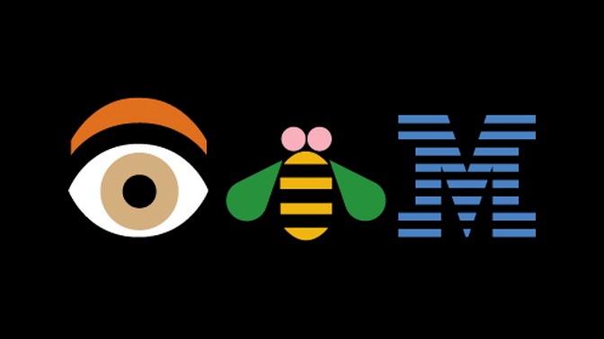

IBM Boot Logos
Retro IBM boot logos and the tools to put them into AMI UEFI firmware. They've been tested on ThinkPads and ASUS desktop boards. Each logo is a 24-bit BMP, ready to use as a POST splash screen or as a Windows boot logo. The full instructions are in the README and the help file.

Eye-Bee-M on a ThinkPad X210Ai
This is Paul Rand's 1981 Eye-Bee-M rebus, flashed into the X210Ai's own firmware. It shows from the moment the laptop powers on.
Logos



IBM 8-bar (Aptiva BIOS)
The original bitmap, extracted from an IBM Aptiva 2137 BIOS and drawn 1:1.

Aptiva 2139 boot screen
A rebuild of the IBM Aptiva 2139-E5Y startup screen, made with the genuine IBM bitmap.


Machines
ThinkPad X210Ai
AMI Aptio V with Boot Guard on. The logo file sits outside the Boot Guard–protected area, so it can be patched. It was patched the same way patch_ami_logo.py works, and only the changed 4 KB blocks were flashed with flashrom -l layout -i logo.
ASUS PRIME B360-PLUS / B360M-A
The firmware logo was flashed with Intel FPT, writing only the logo window. Every 672×378 logo fits except Eye-Bee-M, which is about 11 KB too big for this board's logo space.
ThinkPad T530
Next on the list.
ThinkPad T480s
Next on the list.
Tools
patch_ami_logo.py
Works on any AMI Aptio board. It finds the logo file, re-packs your BMP and outputs a small window to flash, with ready-to-use FPT and flashrom commands.
patch_logo.py
The original version for the ASUS PRIME B360-PLUS BIOS 3101 only. It refuses to run on any other board or BIOS version.